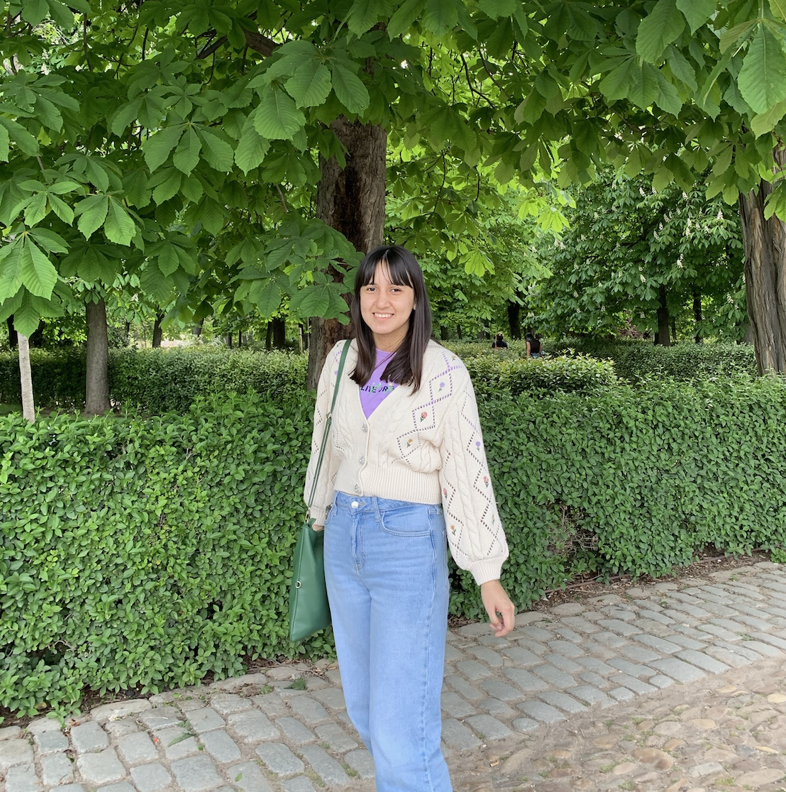

Curriculum vitae
Información personal
Educación
Habilidades
Proyectos
Contacto
Información personal
Noelia Pasaca
napasaca@espol.edu.ec
(+593) 99 928 8045

Educación
Instituto
Carrera
Período
Escuela Superior Politécnica del Litoral
Ingeniería en Computación
Octubre 2021 - Presente
Habilidades
Conocimiento en uno o más lenguajes de programación como Python, Java, C++, JavaScript, PHP.
Comprensión profunda de algoritmos básicos y avanzados.
Dominio de estructuras de datos.
Familiaridad con bases de datos relacionales como SQL.
Uso de sistemas de control de versiones como Git.
Proyectos
Ganador Pyweekend 9na. Edición
Contactar
Nombre:
Correo electrónico:
Mensaje:
Enviar
Cancelar
Ubicación